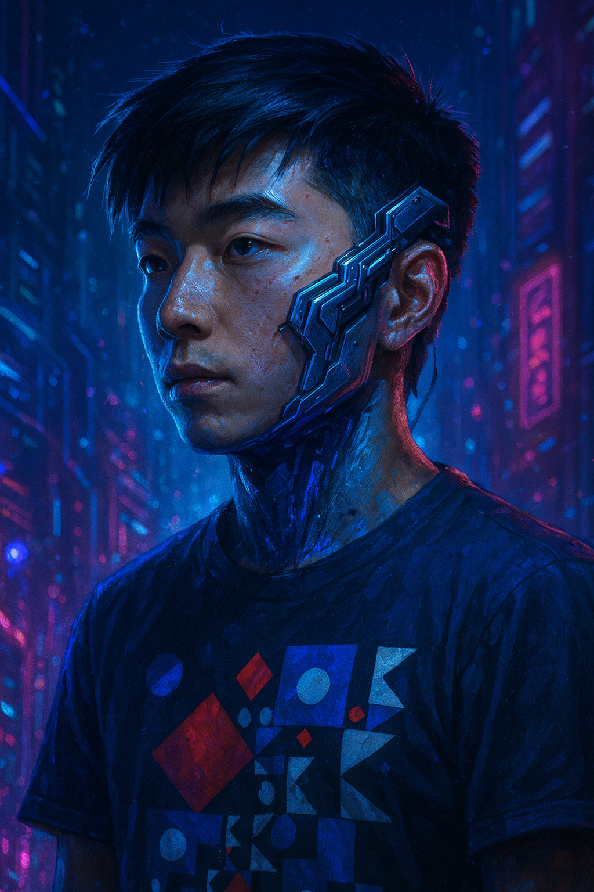

Selected Publications

Learning Latent Proxies for Controllable Single-Image Relighting
CVPR'26


* Full publication list available on Google Scholar.

Currently, I am working closely with Tianlong Chen. My research interests lie in Multi-modal Foundation Models, 3D Vision, and AI4Science.
* Full publication list available on Google Scholar.